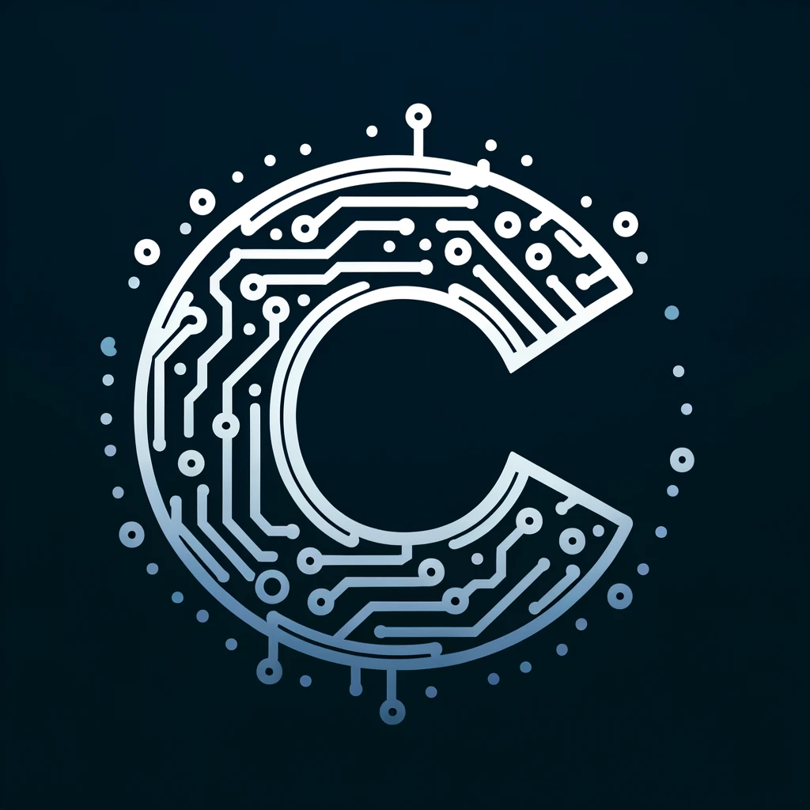

About Me
안녕하세요! 저는 단국대학교 소프트웨어학과 3학년에 재학 중인 학생입니다. 현재 게임 클라이언트 개발 분야에서 커리어를 쌓기를 희망하고 있습니다. 대학에서 배운 지식과 다양한 프로젝트 경험을 바탕으로 창의적이고 사용자 친화적인 게임 솔루션 개발에 기여하고자 합니다. 게임 개발에 대한 열정과 함께, 팀에서의 협업을 중시하며 항상 새로운 기술을 배우기 위해 노력하고 있습니다.
Inspiration
Mel Robbins가 TEDxSF에서 진행한 'How to stop screwing yourself over' 강연은 자기 자신을 방해하는 행동을 멈추고, 변화를 실현할 수 있는 구체적인 방법을 제시합니다. 이 강연은 변화를 추구하는 모든 이에게 강력한 동기부여를 제공하며, 개인적 성장과 발전을 추구하는 이들에게 큰 영감을 줍니다
Skills
Certificates
컴퓨터 활용 능력 1급
워드프로세서 1급
리눅스 마스터 1급
네트워크 관리사 1급
네트워크 관리사 2급
Projects
Project 1
Project 2
Project 3